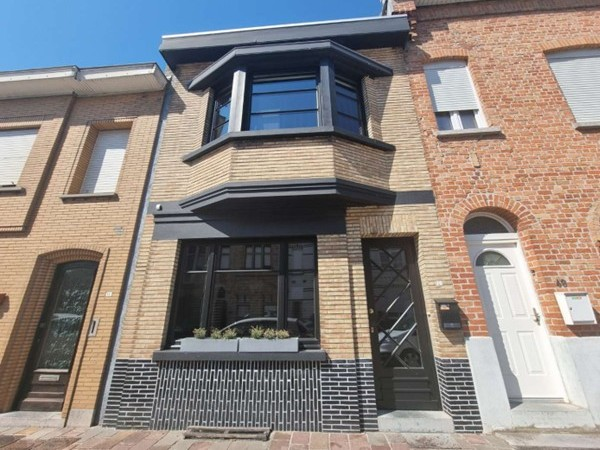
Genieten van de verkwikkende zeelucht en voorbij glijdende zeemeeuwen in deze leuke vakantiewoning, voor max 4 personen, adres Duinkerkestraat 51, een rustige straat dichtbij het historisch centrum en marktplein van Nieuwpoort-Stad.
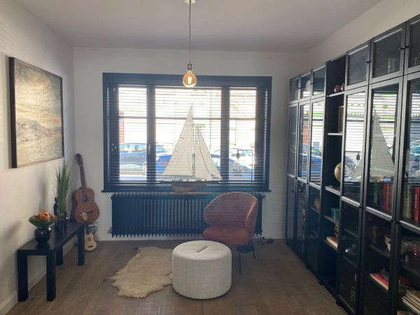
Starten doen we in de klassieke voorplaats waar de rust ons overvalt.
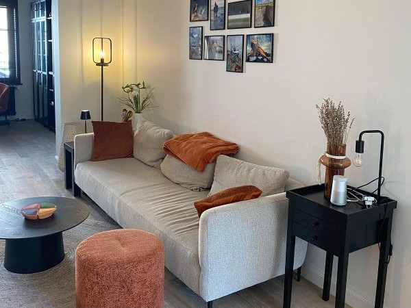
Gevolgd door een gezellig salon centraal in de vakantiewoning.
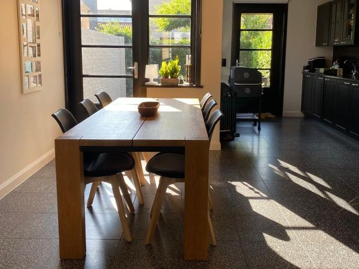
Eindigend in de lichtrijke eetruimte, inclusief kinderstoel, naast de open keuken.
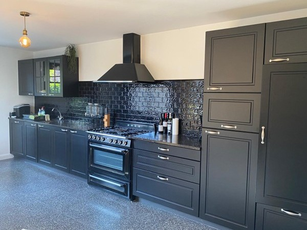
Volledig uitgeruste moderne keuken met SMEG fornuis, oven, microgolf, frigo, vaatwas, koffiezet, allerhande keukengerief. Ook warme koffie en geurige thee staan voor je klaar.
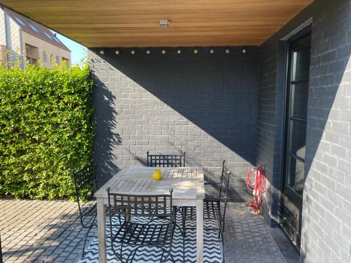
Gezellig en volledig groen ommuurd stadstuintje met overdekt terras.
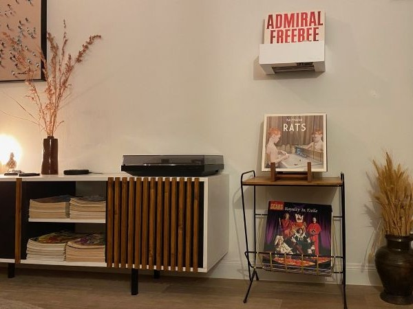
Geniet van een ruime verzameling Belpop vinyl, zowel hedendaags als helemaal terug tot in de heerlijke jaren 80.
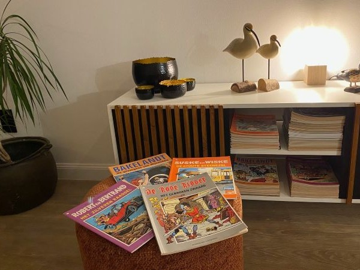
Herontdek een reeks oude strips: De Rode Ridder, Suske & Wiske, Bakelandt, Robert & Bertrand, Jommeke, Kiekeboe, Yoko Tsuno, FC De Kampioenen, ...
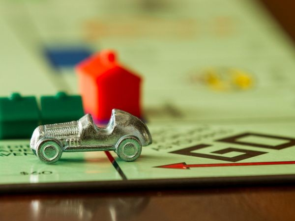
Neem de tijd om de snuisteren in de kast met gezelschapsspelen, je hebt het door, er wordt geen tv gekeken in de vakantiewoning, ook geen internet aansluiting zodat je volop kunt genieten van elkaars gezelschap.
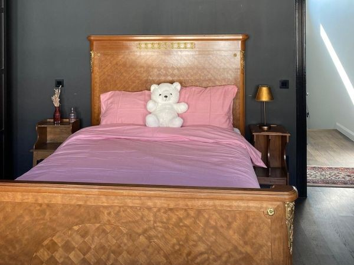
De masterbedroom, met twijfelaarbed, verse lakens zijn voorzien.
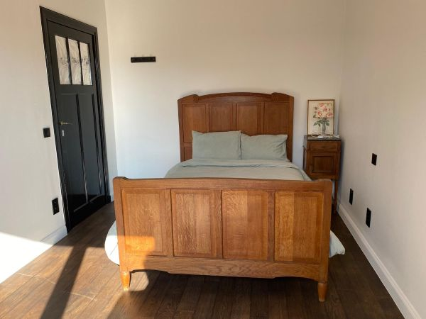
Een tweede slaapkamer, eveneens vintage twijfelend.
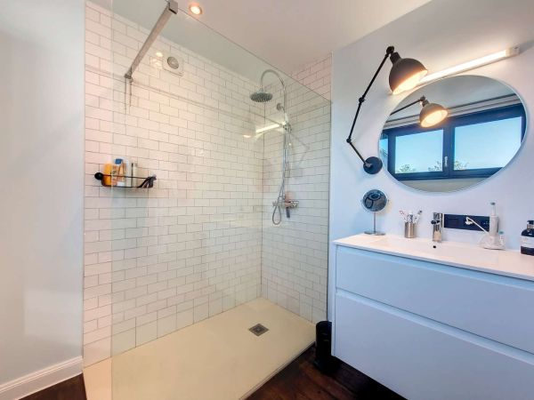
Moderne badkamer met instapdouche en lavabo, uitgerust met verse handdoeken, en voorzien van shampoo, douchegel en zeep.
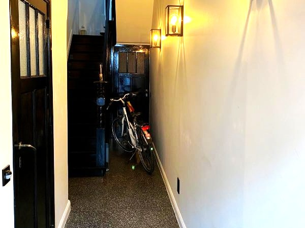
Fietsen vinden hun plaats in de inkom hal.
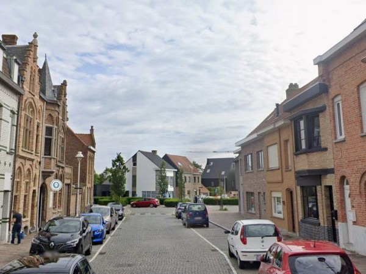
Steeds gratis parkeermogelijkheid voor de deur, in de straat, ...
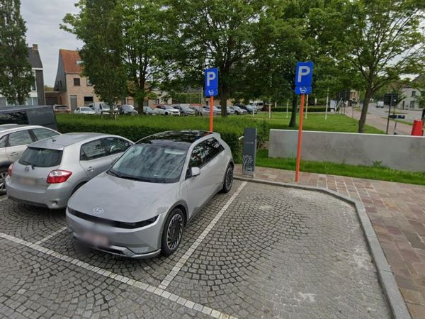
4 openbare laadpunten voor elektrische wagen, eveneens gratis parkeren, op wandelafstand (50m).
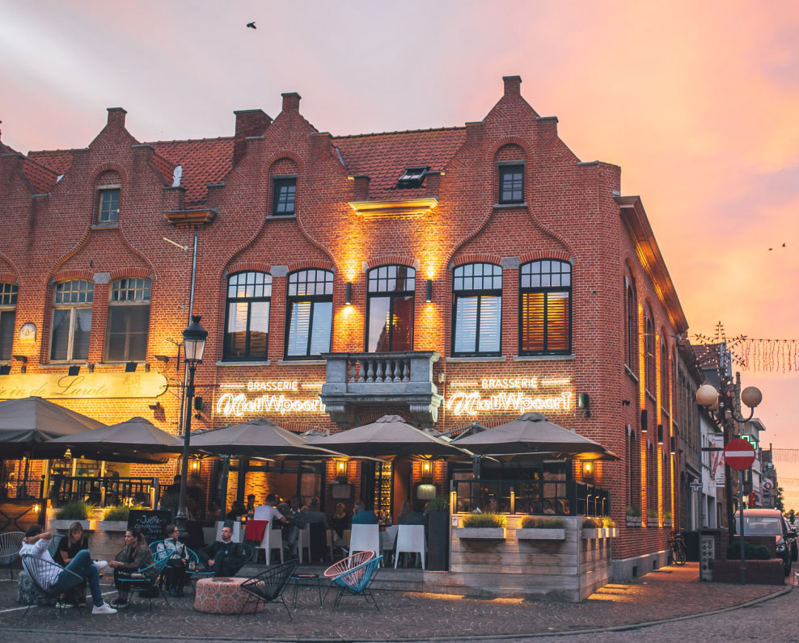
Het charmante marktplein van Nieuwpoort-Stad met zijn vele gezellige restaurants vind je op 300m wandelen.
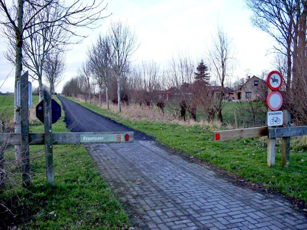
De Duinkerkestraat in Nieuwpoort-Stad ligt ook letterlijk aan de start van de Frontzate, een uniek fietspad tussen Nieuwpoort en Diksmuide, ooit de spoorlijn die de kust met het hinterland verbond, loopt vandaag als een rustige groene corridor door de polders.
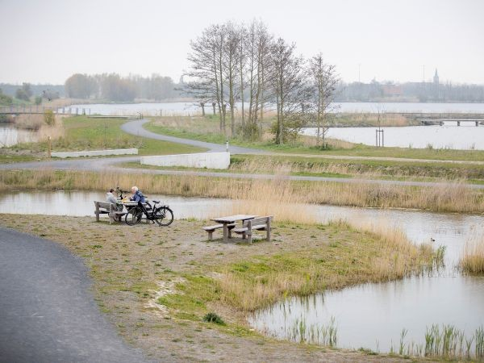
Tussen het bruisende Nieuwpoort-Stad en het stille polderdorp Ramskapelle ligt een verborgen parel van de kust, het provinciedomein Koolhofput, een oase van groene rust en natuur, naast de Frontzate en op 500m wandelafstand van de vakantiewoning.
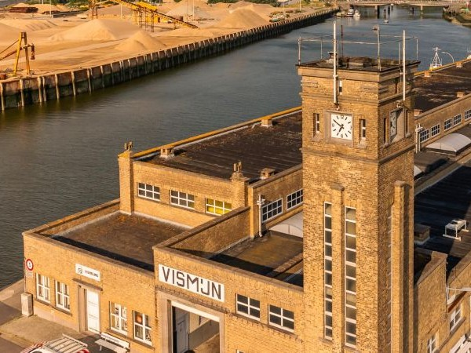
Op 700m wandelen vinden we de vismijn van Nieuwpoort-Stad, de kortste weg voor verse vis van de lokale vissers naar handelaars en horeca. Aan de overkant van de vismijn vinden we dan de viswinkels De Panger, Albert, ...
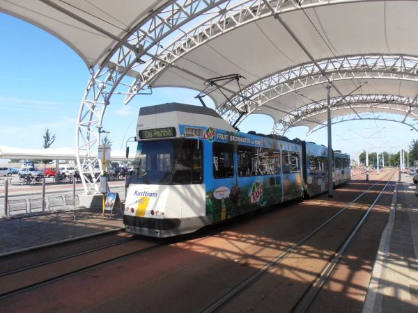
Op 900m van de vakantiewoning, via het Marktplein van Nieuwpoort-Stad, vinden we de kusttram, die je langs de ganse Belgische kust brengt, van De Panne tot Knokke-Heist, maar ook gewoon snel tot in Nieuwpoort-Bad.
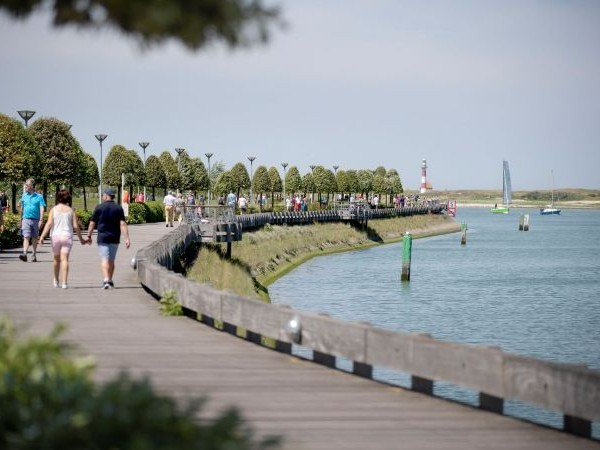
Wie gewoon wil wandelen van Nieuwpoort-Stad naar Nieuwpoort-Bad kan dit ook doen langs de vaargeul, een 3km lang wandelpad dat je helemaal tot op het strand brengt.
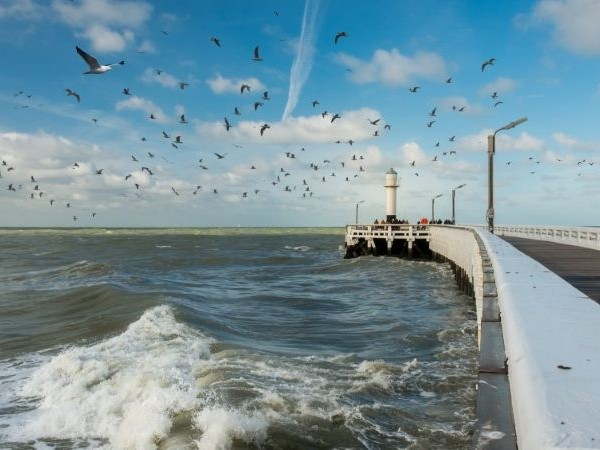
Laat je betoveren door één van de absolute parels van onze Belgische kust, Nieuwpoort-Bad.
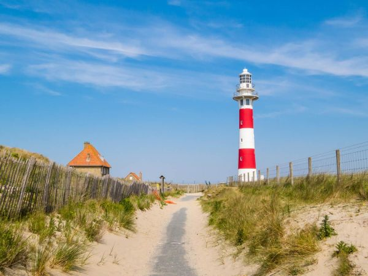
Vele wandelroutes zowel ter plaatse vertrekkend of via de Kusttram, zowel uitgepijld als via knooppunten. Map met overzicht in vakantiewoning.
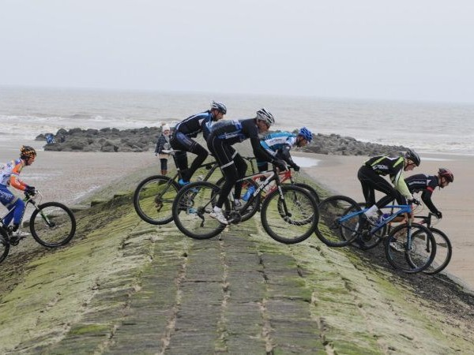
Voor de sportievelingen hebben we de groene mountainbike lus van Nieuwpoort, het Michel Pollentier parkoers is 33km lang en passeert aan de vakantiewoning, met een mooie afwisseling van polders, duinen en strand.
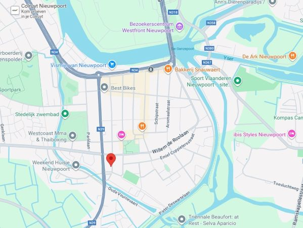
De vakantiewoning wordt enkel verhuurd aan vrienden en kennissen, aan de vaste prijs van 75€ per nacht. Reservatie aanvraag kan via formulier onder de kalender met beschikbaarheid.